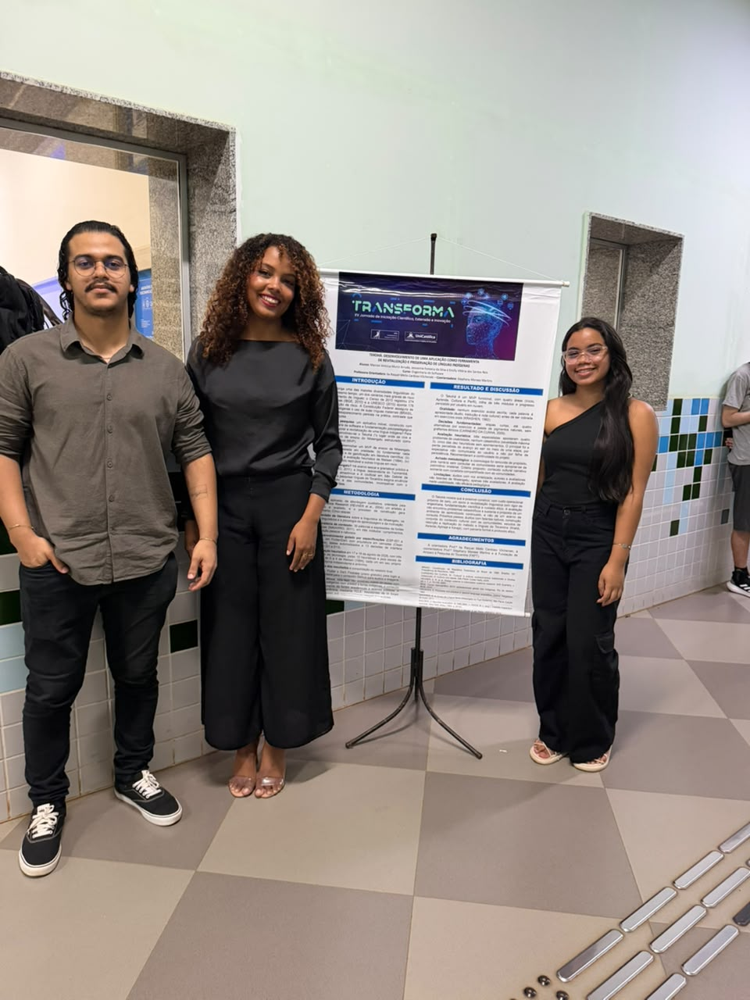
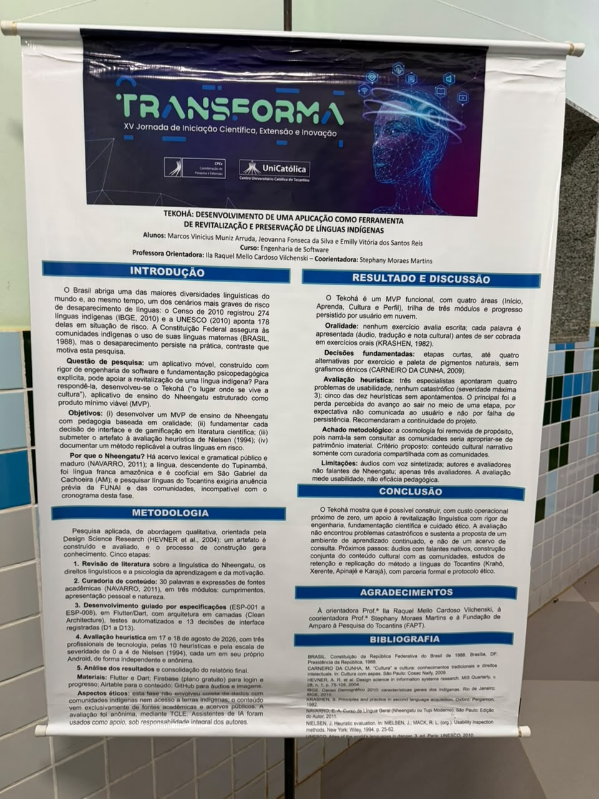
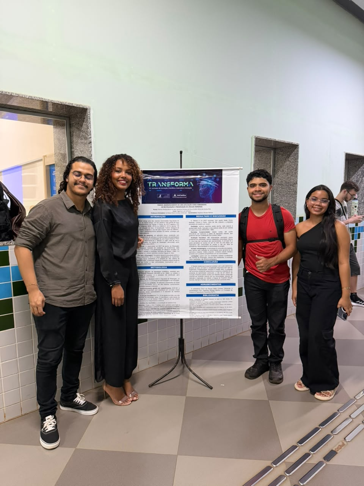

No dia 7 de outubro, foi apresentado o projeto “Tekohá: desenvolvimento de uma aplicação como ferramenta de revitalização e preservação de línguas indígenas”, durante a XV Jornada de Iniciação Científica, Extensão e Inovação — TRANSFORMA. A iniciativa busca unir tecnologia e educação para contribuir com a valorização e a preservação das línguas indígenas brasileiras.

Desenvolvido pelos estudantes Marcos Vinicius Muniz Arruda, Jeovanna Fonseca da Silva e Emilly Victória dos Santos Reis, do curso de Engenharia de Software, o trabalho conta com a orientação da professora Raquel Mello Cardoso Vilchenski e a coorientação de Stephany Moraes Martins.
O projeto surgiu diante da preocupação com o desaparecimento de línguas indígenas e da necessidade de criar ferramentas acessíveis que auxiliem na transmissão desses conhecimentos. Nesse contexto, o Tekohá propõe o desenvolvimento de um aplicativo móvel voltado ao ensino do Nheengatu, língua de origem indígena que integra o patrimônio linguístico e cultural brasileiro.

A aplicação foi estruturada como um produto mínimo viável (MVP), com áreas destinadas à aprendizagem, à cultura, ao perfil do usuário e ao acompanhamento do progresso por meio de trilhas educativas. A proposta utiliza recursos de gamificação e atividades baseadas na oralidade, buscando tornar o processo de aprendizagem mais acessível e envolvente.
Durante o desenvolvimento, a equipe realizou uma avaliação heurística de usabilidade com dez profissionais da área de tecnologia. De acordo com os resultados apresentados, foram identificados quatro problemas de usabilidade de baixa severidade, além de três avaliações heurísticas sem apontamentos críticos. Os resultados contribuíram para identificar melhorias e orientar a continuidade do projeto.


Apesar dos avanços, os pesquisadores reconheceram limitações importantes, como a utilização de áudios com voz sintetizada e a ausência de avaliação direta com falantes de Nheengatu. Por isso, entre as próximas etapas, estão previstas melhorias nos recursos de áudio, a construção conjunta de conteúdos com as comunidades indígenas e a ampliação da pesquisa para outras línguas, como Krahô, Xerente, Apinajé e Karajá.
A iniciativa evidencia o potencial da tecnologia como instrumento de valorização cultural e preservação da diversidade linguística. Ao aproximar a Engenharia de Software das questões sociais e educacionais, o projeto Tekohá reforça a importância de desenvolver soluções digitais que respeitem os conhecimentos tradicionais e contribuam para a continuidade das